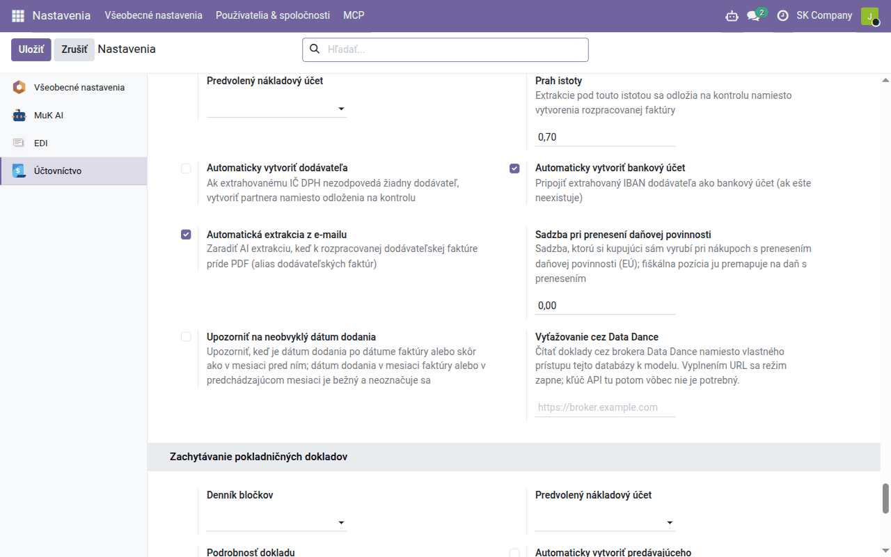

Návod k úlohe
Vyťažovanie dokladov
Dodávateľské faktúry vyplnené z PDF umelou inteligenciou a pokladničné bločky prečítané z QR kódu cez eKasu alebo z fotografie — čo sa vyplní samo, čo treba skontrolovať a ako z toho vznikne doklad v účtovníctve.
| Krajina | Slovensko |
|---|---|
| Edícia | Odoo Community |
| Zahŕňa | account_invoice_ai_extract (dodáva sa samostatne), account_invoice_ai_extract_broker_client (dodáva sa samostatne), l10n_cssk_receipt_capture, l10n_sk_ekasa_receipt, l10n_cssk_receipt_capture_ai (dodáva sa samostatne), l10n_cssk_receipt_capture_expense |
Na čo slúži tento návod
Odoo vie dodávateľské doklady prepísať samo:
| Doklad | Ako sa číta | Kto to zapína |
|---|---|---|
| Dodávateľská faktúra alebo dobropis v PDF | jazykový model prečíta PDF; Odoo z prečítaného vyplní koncept faktúry | náš tím — požiadajte o zapnutie |
| Slovenský pokladničný bloček s QR kódom | QR kód sa overí v systéme eKasa finančnej správy, ktorý vráti doklad aj s položkami | vy — moduly z Aplikácií |
| Bloček bez čitateľného QR kódu, český bloček | jazykový model prečíta fotografiu | náš tím |
Vo všetkých prípadoch platí to isté rozdelenie práce: model alebo eKasa len číta, Odoo rozhoduje (dodávateľa, dane, kontrolu súčtov a duplicít) a zaúčtujete vy — výsledkom je vždy koncept.
Pri čítaní umelou inteligenciou opustí databázu celý súbor dokladu a pošle sa službe Data Dance na vyťažovanie; nič iné z databázy (partneri, účty, iné doklady) sa neodosiela.
Dodávateľské faktúry
Nastavenie
Keď čítanie zapneme, skontrolujte v Účtovníctvo → Konfigurácia → Nastavenia, blok AI extrakcia faktúr:
| Nastavenie | Čo nastaviť |
|---|---|
| Nákupný denník | denník, do ktorého prídu faktúry vytvorené čítaním |
| Predvolený nákladový účet | účet riadkov; prázdne = obvyklý účet dodávateľa, potom účet denníka (pozri Nastavenie predkontácií) |
| Prah istoty | prečítania, ktoré model sám hodnotí nižšie (predvolene 0,7), sa odložia na kontrolu |
| Automaticky vytvoriť dodávateľa | vypnuté: neznámy dodávateľ sa odloží na kontrolu; zapnuté: vytvorí sa |
| Automaticky vytvoriť bankový účet | pridá dodávateľovi IBAN vytlačený na faktúre — vypnite, ak bankové účty dodávateľov najprv overujete |
| Automatická extrakcia z e-mailu | faktúra, ktorá príde e-mailom, sa prečíta sama |

Ktorej nákupnej dani zodpovedá vytlačená sadzba, určuje Účtovníctvo → Konfigurácia → AI: mapovanie DPH faktúr — pre 23, 19 a 5 % je vyplnené po inštalácii; skontrolujte ho.
Ako faktúra príde
- E-mailom: nastavte nákupnému denníku e-mailový alias (karta Pokročilé nastavenia denníka) a dajte ho dodávateľom. Každé PDF v e-maile sa stane konceptom faktúry a prečíta sa.
- Ručne: vytvorte koncept dodávateľskej faktúry, priložte PDF a kliknite na Extrahovať pomocou AI.
Čítanie beží na pozadí (spravidla do piatich minút).
Výsledok
Všetky čítania sú v Účtovníctvo → Dodávatelia → AI extrakcie faktúr, z faktúry vedie na čítanie tlačidlo AI extrakcia:
| Stav | Význam |
|---|---|
| Vyriešené | koncept faktúry je vyplnený |
| Na kontrolu | sumy nesedia, istota je pod prahom alebo sa nenašiel dodávateľ; dôvod je uvedený |
| Duplicita | faktúra toho istého dodávateľa s rovnakým číslom už existuje |
| Chyba | dôvod je uvedený; po náprave Spustiť znova |
Vyplní sa dodávateľ (podľa IČ DPH, IČO, názvu s právnou formou alebo IBAN), číslo faktúry ako referencia, dátumy vrátane dátumu dodania, variabilný, konštantný a špecifický symbol, riadky (alebo riadok za každú sadzbu DPH, ak sa detail nedá zosúladiť), dane podľa mapovania sadzieb a fiškálnej pozície dodávateľa a DPH za každú sadzbu presne podľa rekapitulácie na faktúre.
Pred zaúčtovaním skontrolujte
- dodávateľa — najmä ak história faktúry uvádza, že sa našiel podľa názvu alebo IBAN, alebo bol vytvorený;
- nové bankové účty dodávateľa a účet príjemcu platby;
- dátum dodania — určuje obdobie odpočtu DPH;
- nákladový účet a daň každého riadku a prenesenie daňovej povinnosti tam, kam patrí;
- každé hlásenie ⚠ v histórii a súčet voči sume na úhradu.
Potom faktúru zaúčtujte ako ktorúkoľvek inú (Denná agenda).
Pokladničné bločky
Nastavenie
- Z Aplikácií nainštalujte Slovak eKasa Receipt Capture (s ním sa nainštaluje aj spoločný rámec Fiscal Receipt Capture — Shared Framework). Ak bločky odovzdávajú zamestnanci ako výdavky, aj Fiscal Receipt Capture — Employee Expenses. V zozname aplikácií majú moduly anglické názvy, po inštalácii sú ich obrazovky po slovensky.
- Účtovníctvo → Konfigurácia → Nastavenia, blok Zachytávanie pokladničných dokladov: Denník bločkov (nákupný denník bločkov) a Predvolený nákladový účet (nákladový účet — bez neho sa doklad z bločku nevytvorí).
- Blok Overenie slovenského dokladu v eKase: zapnite Zapnúť overenie v eKase. Systém eKasa smie odpovedať len z IP adresy, ktorá bola oznámená finančnému riaditeľstvu (§ 18 ods. 11 zákona o evidencii tržieb): po oznámení zaškrtnite IP adresa oznámená (§ 18 ods. 11) a zapíšte adresu a dátum. V hostovanej službe Data Dance je to adresa nášho servera — oznámenie s vami vybaví náš tím. Služba povoľuje približne 60 overení za hodinu z jednej adresy (Hodinový limit overení).
Zachytenie bločku
Účtovníctvo → Dodávatelia → Pokladničné doklady:
- Naskenovať bloček otvorí kameru — naskenujte QR kód priamo nad textom OVERTE DOKLAD POMOCOU QR KÓDU (nie kód vernostnej aplikácie);
- alebo v Zachytené doklady → Nový priložte fotografiu (Zdrojový obrázok) a kliknite na Zachytiť.
eKasa vráti doklad tak, ako ho zaevidovala pokladnica: predávajúceho s DIČ, IČ DPH a IČO, dátum, sumu, všetky položky a rekapituláciu DPH. Bloček je potom Zachytené; ak niektorá kontrola nesedí (súčty, sadzby, duplicita), je Na kontrolu s dôvodom; všetky také doklady sú v ponuke Na kontrolu.
Predávajúci sa hľadá podľa IČ DPH, IČO a DIČ, nikdy podľa názvu; nového vytvoríte tlačidlom Vytvoriť predávajúceho.
Doklad v účtovníctve
Vytvoriť nákupnú účtenku vytvorí koncept nákupnej účtenky s jedným riadkom za každú sadzbu DPH na predvolený nákladový účet a s fotografiou. Skontrolujte ho a zaúčtujte.
Zjednodušená faktúra stačí na odpočet DPH len do 400 € vrátane DPH (§ 74 ods. 3 písm. b) zákona o DPH). Pri vyššej sume bloček upozorní a DPH sa zaúčtuje do nákladu; ak máte na nákup riadnu faktúru, zaškrtnite Máme riadnu faktúru.
Bloček, ktorý zamestnanec platil vlastnými peniazmi, patrí do výdavkov: Vytvoriť výdavky vytvorí výdavok pre zamestnanca, alebo zamestnanec bločky nahrá sám vo Výdavky → Moje výdaje (Naskenovať bloček, Moje bločky).
Bloček bez QR kódu
Ak sa QR kód z fotografie nedá prečítať, alebo ide o český bloček (ten kód na overenie nemá), prečíta fotografiu jazykový model — keď ho náš tím zapne. Pri slovenskom bločku model prečíta aj identifikátory vytlačené pri kóde a Odoo ich overí v eKase; ak eKasa doklad nájde a suma sedí, nahradia jej údaje prečítané. Zachytený bloček má kartu Čítanie pomocou AI s istotou a poznámkami modelu.